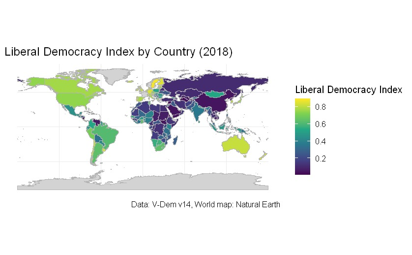
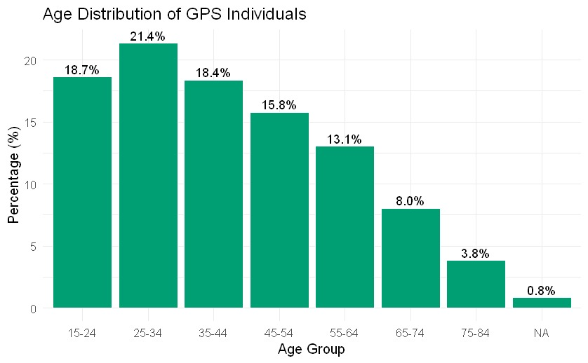

Milestone 1
Regime Changes and Economic Preferences: Global Evidence
Motivation
Economic preferences, especially trust at the individual level, are crucial for economic growth and vary widely across countries (Algan and Cahuc (2013)). Research has also shown, that political systems can shape political preferences (Fuchs-Schündeln and Schündeln (2015)); however, their impact on economic preferences remains incompletely understood . The initial hypothesis for this paper was that attained education might be influencing economic preferences. However, given that autocratic regimes frequently implement educational reforms as a homogenization tool to preserve their interests and maintain power (Alesina, Giuliano, and Reich (2021)), education can function as a mechanism through which political institutions influence economic preferences of individuals. This is why we will be interested in examining the causal link of regime changes on economic preferences.
Research question
What is the effect of regime changes on economic preferences of individuals? More precisely, we are interested in understanding the dynamics of economic preferences of individuals who experienced regime changes in their countries.
Literature overview
The motivation for this study stems out of the existing literature on the relationship between political regime changes and economic preferences. The study from Algan and Cahuc (2013) documents trust at the individual level as a causal determinant of economic growth across different countries.
Research from Friehe and Pannenberg (2020) investigates how political systems shape individual’s economic preferences, utilizing the German separation and later reunification as a natural experiment. Apart from this, the researchers also adopt a geographic regression discontinuity design with border segment fixed effects to examine the causal relationship. The time preferences are measured using survey questions from the German Socio-Economic Panel (SOEP) in 2008 and 2013. This dataset operationalizes present bias through an 11-point impulsitivity scale and patience through a similar 11-point scale, both validated against experimental data. Their findings reveal that former GDR residents exhibit significantly lower present bias compared to their FRG counterparts, while patience levels remain statistically indistinguishable. We would like to extend the analysis and investigate whether these institutionally-shaped preferences would be present also in a global dataset and across different social contexts.
Similar evidence we can also find in the paper Fuchs-Schündeln and Schündeln (2015), where the authors investigate, how political preferences (especially support for democracy), are shaped by individual experiences with democratic political systems. The authors make use of a within-country variation at the individual-level observations from 104 countries between 1994 and 2013. Their empirical strategy employs country-year fixed effects to account for all country-level unobservables specific to a given year, like current institutions, ruling parties or economic conditions. The independent variable is “democratic capital”, which is a measure of accumulated experience with democracy that depreciates at a rate of 2% annually. The findings reveal that preferences for democracy increase significantly with longer exposure to democratic rule. This relationship holds across different measures of support for democracy and different datasets (the autors use data from the World Values Survey and Afrobarometer). The magnitude of the effects is substantial: approximately 8,5 years of continuous democratic experience support for democracy by the same amount as moving from primary to secondary education. These results are robust to various specifications, controlling for age effects and alternative ways of measuring democratic periods. The findings of this paper suggest, that popular support for democratic institutions requires time to develop.
Data description
At this point, we have 3 datasets, which we are working with.
The variables containing economic preferences of individuals will be taken from the Global Preference Survey (GPS) Falk et al. (2018) dataset, where we can find numerical evaluation of risk-taking, patience, positive and negative reciprocity, altruism, trust and math skills of about 80 000 representative individuals from 76 countries. The survey data was collected in 2012 and apart from the economic preferences data provide information about each individual’s country and region of residence, language, age an gender.

In the choice of the second dataset, we have two options:
The initial proposed dataset is the V-Dem Coppedge et al. (2025) dataset, containing 531 V-Dem indicators and 245 indices + 60 other indicators for 195 countries, published on yearly basis from 1789 till 2024. From this dataset, we took the variable Liberal democracy index (v2x_libdem). This is also the dataset we have been working with so far.
We are also considering to change the V-Dem dataset for the Polity IV dataset.
Next step in our analysis involved calculation of birth years for all subjects withing the GPS dataset sample.
Then we established a democratic participation threshold by adding 18 years to each individual’s birth year and saved it as year_at_18. We assume, that upon reaching 18 years of age, individuals attain legal capacity for democratic participation in governance systems. We ended up with data between 1930-2015. The following histogram depicts the distribution of observations.
After this, we merged the GPS dataset with V-Dem (Liberal democracy index, country name, year). With the help of a custom function, we added a binary variable regime_change, which gives value 1 if an individual experienced a regime change in his lifetime and 0 if an individual didn’t experience a regime change in his lifetime. We are assuming the individuals have been living in the same country.
We are also planning to investigate if exposure to different political regime over a very long time horizon might influence the former resident’s economic preferences. We base our hypothesis on the findings of Friehe and Pannenberg (2020), who found out on the example of reunified Germany, that a long exposure to the socialist regime during certain formative years had an effect on current preferences. In order to examine this globally on our global dataset, some more data-wrangling will be needed.
Empirical strategy
We will be using DiD approach to examine the relationship between regime changes(=treatment) and economic preferences on individual level across multiple countries and time periods. This will allow us to compare the dynamics of economic preferences of different, using subjects from countries without regime changes as control groups.
Setting
Our unit of study are individuals. We are working with pseudo-panel design in the GPS dataset, which uses cross-sectional data, where different individuals are surveyed during 2012-2013. This allows us to group the individuals into cohorts based on fixed characteristics (country, gender, age group). In contrast, if this was a panel design, the same individuals would be surveyed repeatedly over multiple time periods, which would allow us to track changes in their preferences over time and better control for unobserved heterogeneity.
Treatment
The non-experiment treatment is exposure to regime changes, particularly democratization. A treated individual would be someone who lived through a regime change in their country. But the treatment could vary based on:
Age exposure to regime change
Duration of exposure to different regime types
Intensity of regime change (magnitude of shift in democracy index)
Important point to mention is that the treatment assignment will likely be occuring at different points in time and the treatment assignment might turn on-and-off over time (Intuition: country might change regime more than once during the analysed time period).
Controls
Individual-level: age, gender, math-skills, country, region
Country-level: GDP per capita (is currently not included in our available data, we would have to add)
Bias and Identification
Reverse causality: The challenge will be to deal with the endogeneity problem. Both economic preferences and regimes may be driven by unobserved factors. To solve this problem we could apply country and cohort (age group) fixed effects.
Strong pre-trends, violated parallel trends assumption: In order to be able to establish a causal link in our setting with DiD method, we would have to make sure that individuals from the same age groups across countries would have developed similar economic preferences in the absence of regime changes. In other words: we would have to assume parallel development. This is challenging to verify, our next step would be to examine this visually.
Expected results
The identified effect depends on the specific empirical approach. Since we still have to clarify our empirical setting, our identified effect will need clarification aswell. Since we are lacking the pre-treatment economic preferences measures, establishing causality becomes more difficult and we rely a lot on assumptions.
Based on previous literature and intuition: - Individuals born under democratic regimes might display higher trust and potentially more cooperative behavior. These effects may be stronger for older generations and weaker under authoritarian settings. Our goal is to examine the dynamics of this settings.